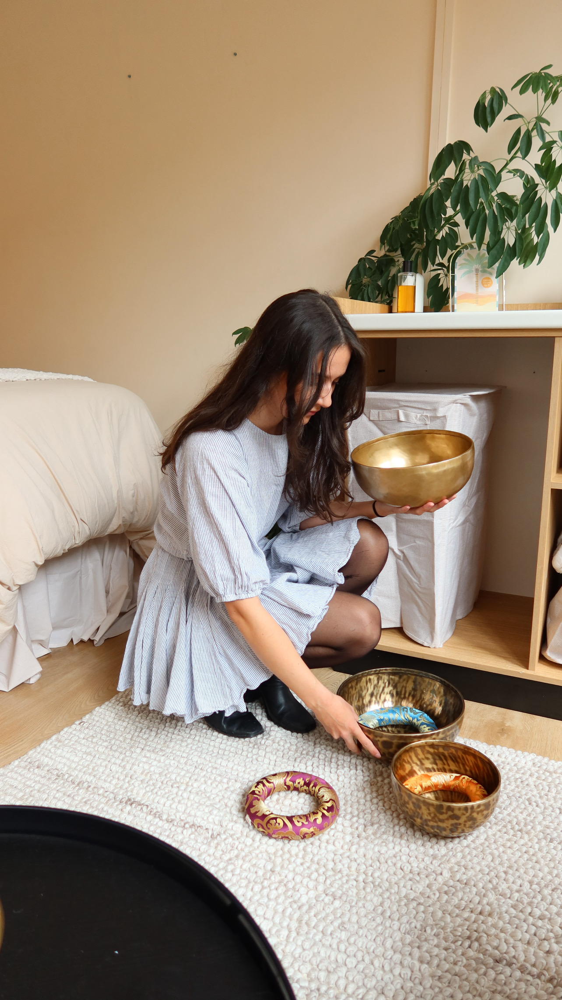

For women who built the success they were told to want... and somehow lost themselves along the way.
A four-stage framework rooted in nervous system science, psychological research, and the wisdom of your own lived experience.
Name what's actually happening beneath the surface. Identify the patterns, the nervous system responses, the beliefs that have been running the show.
Create safety in the body before trying to change anything. Rest, regulation, and rebuilding the foundations that support sustainable wellbeing.
Reconnect with your actual values, not the ones you inherited or performed. Clarify what success means to you on your own terms.
Step back into your life with intention. Build from desire, not from wound. Move forward in a way that actually feels like you.
Most high-achieving women cycle between three of these. Very few are living in the fourth. Knowing yours is the beginning of everything.
Driven, restless, reactive. You're running on adrenaline and mistaking it for motivation. Everything feels urgent. Rest feels impossible.
People-pleasing, saying yes when your body is screaming no. You've made yourself so agreeable you've lost track of what you actually want.
Numb, foggy, disconnected. Going through the motions. The emotional dial has been turned down so low you feel like you're watching your life from behind glass.
Present, grounded, clear. You can feel the full range of your emotions without being controlled by them. This is where growth, connection, and creativity live.
It takes 2 minutes to find out - and it changes everything.
You built the career, the business, the life - and you're quietly wondering if this is really it
You're exhausted in a way that sleep doesn't fix and holidays don't cure
You've tried coaches before and they just kept stripping your ideas back
You've got a spiritual side you've been hiding because someone told you it wasn't professional
You know something needs to change but can't justify it when everything looks fine from the outside
You want the fire back - burning from desire, not from wounds
You're not burned out. You're just... fed up
It's buried under years of doing everything for everyone else. Under the weight of being capable and competent and quietly, relentlessly exhausted.
You've probably tried to fix it - the courses, the coaches, the holidays that didn't quite do it. And still there's this low hum underneath everything. This sense that you're performing a version of your life rather than actually living it.
Your nervous system has been running on high alert with no permission to turn off for, probably, years. At this point you may not even know how to.
Emily is an expert at identifying the patterns keeping your nervous system held captive to what you 'should' be doing - so you can reconnect with who you are and what is important to you. Through her framework, she provides the tools to move you out of that state so you can not only enjoy your work again, but yourself within it too.
This isn't a surface-level chat. This is a structured, science-informed session that goes straight to the heart of what your nervous system has been trying to tell you - and what to do about it.
A personalised follow-up email with resources, integration reflections, and your next-step pathway tailored to what came up for you.
Applications reviewed personally by Emily. You'll hear back within 48 hours.
A space for women who are in the process of coming back to themselves. Nervous system education, honest conversation, shared growth - held in a container where you don't have to explain yourself or perform okayness.
This is connection without the performance. Belonging without the hustle culture. A place to be in process, together.
Join the Waitlist
Held live in Hobart. A guided immersion in brass singing bowls and instrumental sound, designed to drop the nervous system out of doing and into actual rest. No spiritual bypassing, no performance - just a quiet hour your body has been waiting for.
Small groups. Intentional space. Bookable individually or for private sessions.
Enquire about a sessionThe most wonderful experience for anyone looking to feel grounded, calmer, more energised and in a peaceful, mindful state of being. The space has beautiful energy, and Emily is incredible - her ability to tune into one's energetic state is simply magical.
I will be adding Emily's sound bathing services to my regular somatic practices.
I'm not even sure how to describe the feeling, other than complete relaxation and like you're floating away into the clouds. It was like something drew me toward you, knowing I was in for a bad day even though I'd booked it in advance.
It was truly something special, like a reset and rest my body truly needed. I'll be back. I'm so glad I've found you.
I had my first sound bath today. I didn't read up on it - I wanted a completely unbiased experience.
For something to bring me calmness and a sense of peace and safety after losing my business page yesterday, it is well worth taking the time and investing a small portion of your day to yourself and the benefits that follow.
Emily Witt - Founder, Space Between Wellness
I know what it feels like to build a life that looks good from the outside and feel quietly hollow inside. I've spent years in the space between who I was performing and who I actually was - and finding my way back was the work that changed everything.
My background is in psychological science and eight years working in trauma and complex trauma in the community sector. I've seen what happens when high-capacity people keep running past their limits. I've been one of them.
I stopped studying further psychology because it kept excluding the parts that actually mattered to me - the intuitive, the spiritual, the parts of human experience that science alone can't hold. So I built something that bridges both. Evidence-informed. And deeply, unapologetically human.
My work is grounded in neuroscience, nervous system regulation, and trauma-informed practice. It's also woven with genuine spiritual wisdom - not the performative kind, the kind that actually moves something in you. I work with women across Australia from my base in Hobart, Tasmania - online and in person.
I'm a first-generation female builder in my family lineage. I bought my first house before 25. I've done everything the world said would make me feel successful. And the most profound shift came when I stopped doing everything right and started asking what was true.
I am not a registered psychologist or counsellor. My qualifications are in psychological science and my work focuses on education, wellbeing consulting, and trauma-informed coaching. I do not diagnose, assess, or treat mental health conditions.
You are safe with me.The space between where you are and where you want to be is not empty. It's where the real work happens.
Applications reviewed personally by Emily.